TalentManagement
Akib Hossain
11/22/2021
library(plotly)## Loading required package: ggplot2##
## Attaching package: 'plotly'## The following object is masked from 'package:ggplot2':
##
## last_plot## The following object is masked from 'package:stats':
##
## filter## The following object is masked from 'package:graphics':
##
## layoutlibrary(ggplot2)
library(GGally)## Registered S3 method overwritten by 'GGally':
## method from
## +.gg ggplot2library(ggthemes)
library(tidyverse)## ── Attaching packages ─────────────────────────────────────── tidyverse 1.3.1 ──## ✓ tibble 3.1.4 ✓ dplyr 1.0.7
## ✓ tidyr 1.1.4 ✓ stringr 1.4.0
## ✓ readr 2.0.1 ✓ forcats 0.5.1
## ✓ purrr 0.3.4## ── Conflicts ────────────────────────────────────────── tidyverse_conflicts() ──
## x dplyr::filter() masks plotly::filter(), stats::filter()
## x dplyr::lag() masks stats::lag()library(dplyr)
library(class)
library(caret)## Loading required package: lattice##
## Attaching package: 'caret'## The following object is masked from 'package:purrr':
##
## liftlibrary(e1071)
library(fpp)## Loading required package: forecast## Registered S3 method overwritten by 'quantmod':
## method from
## as.zoo.data.frame zoo## Loading required package: fma##
## Attaching package: 'fma'## The following object is masked from 'package:GGally':
##
## pigs## Loading required package: expsmooth## Loading required package: lmtest## Loading required package: zoo##
## Attaching package: 'zoo'## The following objects are masked from 'package:base':
##
## as.Date, as.Date.numeric## Loading required package: tserieslibrary(shiny)
# install.packages("pscl", repos = "https://cran.rstudio.com")
# options(repos="https://cran.rstudio.com" )
Employee_csv_loc <- "./CaseStudy2-data.csv"
Employee <- read.csv(Employee_csv_loc, header = TRUE)
#Graphs----------------------------------------
p = Employee %>%
ggplot(aes(x = Age)) + geom_histogram()
ggplotly(p)## `stat_bin()` using `bins = 30`. Pick better value with `binwidth`.p = Employee %>% #filter(Age == (24:47)) %>%
ggplot(aes(x = Age)) + geom_histogram()
ggplotly(p)## `stat_bin()` using `bins = 30`. Pick better value with `binwidth`.Employee %>% filter(Age == (24:47)) %>%
ggplot(aes(y = Age, color = Attrition)) +
geom_boxplot()## Warning in Age == (24:47): longer object length is not a multiple of shorter
## object length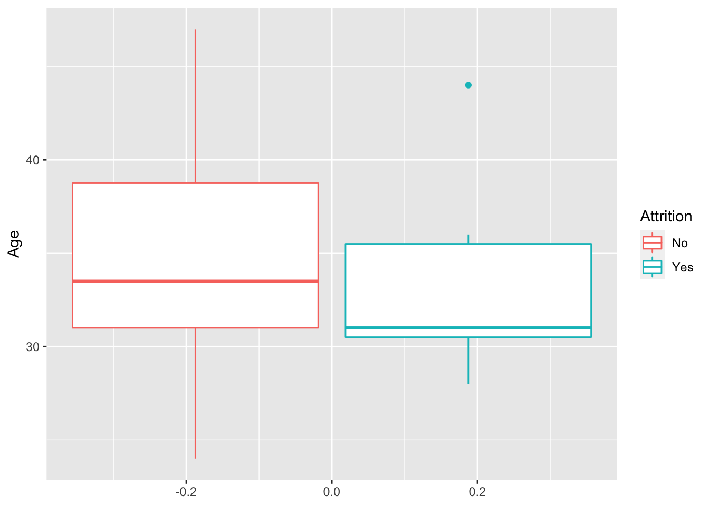
Yes = Employee %>% filter(Attrition == "Yes")
#Age and Attrition
#Middle aged individuals have a lower attrition
A = Employee %>% #filter(Age > 24 | Age < 46) %>%
ggplot(aes(y = Age, color = Attrition)) +
geom_boxplot() + ggtitle("Age and Attrition") +
theme_economist()
A + ggtitle("Age and Attrition") +
xlab("Turnover") + ylab("Age") + labs(color = "Attrition")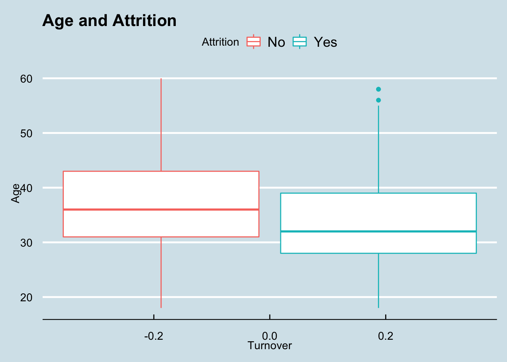
#Healthcare Rep and Research Scientist have the highest job satisfaction
#JobRole = Employee %>% group_by(JobRole) %>% summarize(meanJS = mean(JobSatisfaction), count = #n())
# p = JobRole %>% ggplot(aes(x=JobRole, y = meanJS)) + geom_col()
#ggplotly(p)
# p = q %>% ggplot(aes(x=JobRole, y = count, color = as.factor(Attrition) )) + geom_point()
#ggplotly(p)
#Distance and Attition
# A lower distance from work has a high number of non attrition.
D = ggplot(Employee, aes( x = DistanceFromHome, color = as.factor(Attrition))) +
geom_histogram(position = "Dodge") + theme_economist()
D + ggtitle("Distance and Attrition") +
xlab("Distance from home") + ylab("Employees") + labs(color = "Attrition")## `stat_bin()` using `bins = 30`. Pick better value with `binwidth`.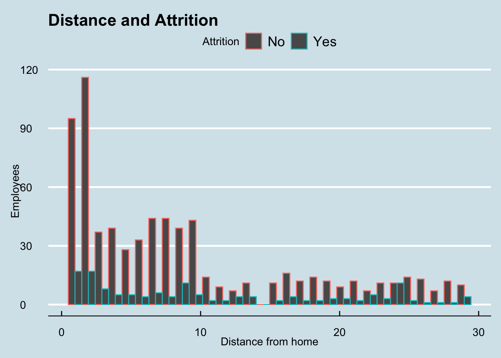
#Life Sciences has the highest Attrition
LS = Yes %>%
ggplot(aes(x = EducationField)) + geom_bar(color = "Blue", fill = "Orange")
ggplotly(LS) + theme_economist()## NULLLS + ggtitle("Life Sciences has the highest Attrition") +
xlab("Education") + ylab("Attrition") 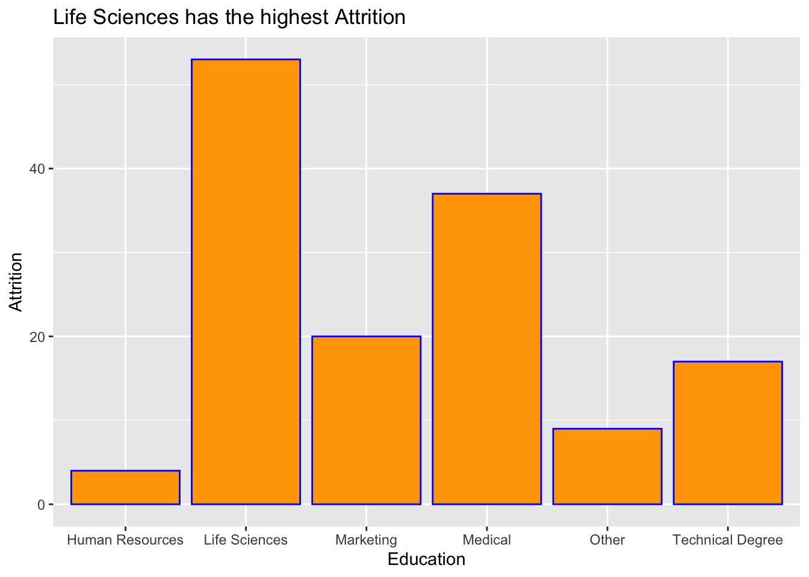
#Male have a higher Attrition
AT = Yes %>%
ggplot(aes(x = Gender)) +geom_bar(color = "Blue", fill = "Orange")
ggplotly(AT) + theme_economist()## NULLAT + ggtitle("Men have the highest Attrition") +
xlab("Gender") + ylab("Attrition") 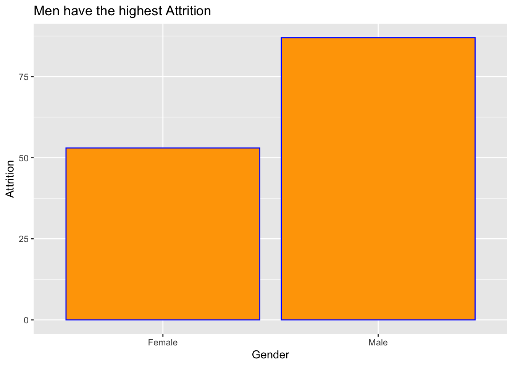
#R&D have the highest number of employees
D = Employee %>%
ggplot(aes(x = Department)) + geom_bar(color = "Black", fill = "Red")
ggplotly(D) + theme_economist()## NULLD + ggtitle("Research and Development") +
xlab("Department") + ylab("Employees")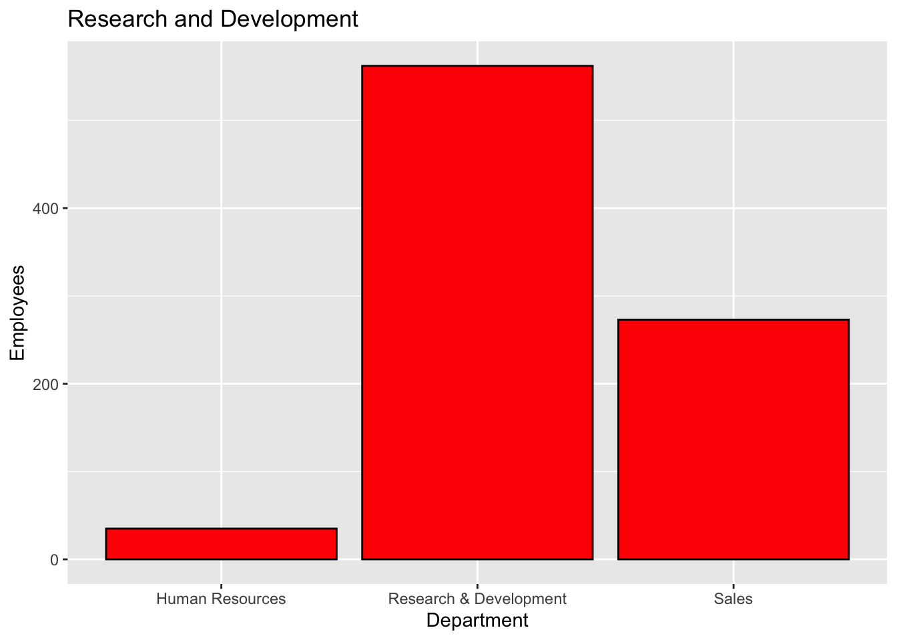
#HR have highest worklife balance
HR = Employee %>% filter(Employee$Department == 'Human Resources') %>%
ggplot(aes(x = Department, fill = as.factor(WorkLifeBalance))) + geom_bar()
ggplotly(HR) + theme_economist()## NULLHR + ggtitle("Human Resource best worklife balance") +
xlab("Department") + ylab("Employee")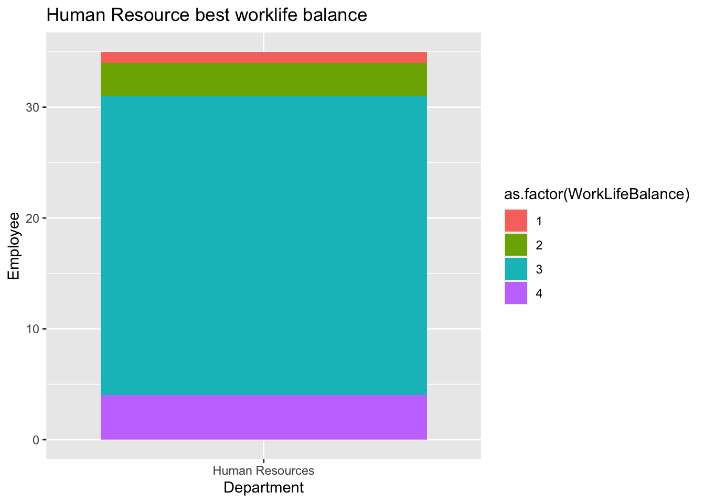
#Sales have lowest attrition
S = Employee %>% filter(Employee$Department == 'Sales') %>%
ggplot(aes(x = Department, fill = as.factor(Attrition))) + geom_bar()
ggplotly(S) + theme_economist()## NULLS + ggtitle("Sales have the lowest Attrition") +
xlab("Department") + ylab("Attrition")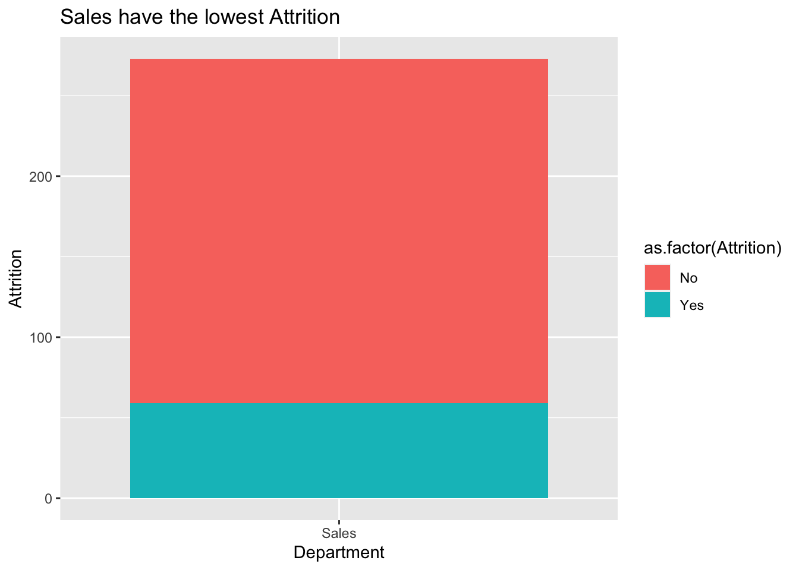
#sales has a higher dailyrate
DR = Yes %>%
ggplot(aes(x = Department, y = DailyRate, fill = as.factor(Department))) + geom_boxplot()
ggplotly(DR) + theme_economist()## NULLDR + ggtitle("Sales has a higher daily rate") +
xlab("Department") + ylab("Daily Rate") + labs(fill = "Department")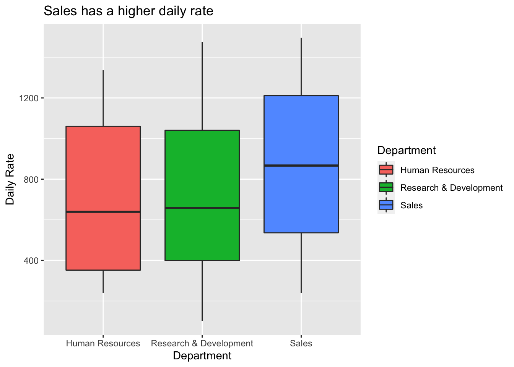
#KNN -------------------------------------------------------
set.seed(6)
splitPerc = .75
MaleFemale = Yes %>% filter (EducationField == "Marketing" |EducationField == "Life Sciences" )
summary(MaleFemale)## ID Age Attrition BusinessTravel
## Min. : 28.0 Min. :18.00 Length:73 Length:73
## 1st Qu.:222.0 1st Qu.:29.00 Class :character Class :character
## Median :439.0 Median :33.00 Mode :character Mode :character
## Mean :437.3 Mean :34.49
## 3rd Qu.:650.0 3rd Qu.:40.00
## Max. :863.0 Max. :56.00
## DailyRate Department DistanceFromHome Education
## Min. : 103.0 Length:73 Min. : 1.00 Min. :1.000
## 1st Qu.: 441.0 Class :character 1st Qu.: 2.00 1st Qu.:2.000
## Median : 703.0 Mode :character Median : 7.00 Median :3.000
## Mean : 780.6 Mean :10.63 Mean :2.726
## 3rd Qu.:1102.0 3rd Qu.:19.00 3rd Qu.:3.000
## Max. :1479.0 Max. :29.00 Max. :5.000
## EducationField EmployeeCount EmployeeNumber EnvironmentSatisfaction
## Length:73 Min. :1 Min. : 1.0 Min. :1.000
## Class :character 1st Qu.:1 1st Qu.: 364.0 1st Qu.:1.000
## Mode :character Median :1 Median : 994.0 Median :2.000
## Mean :1 Mean : 935.8 Mean :2.288
## 3rd Qu.:1 3rd Qu.:1379.0 3rd Qu.:3.000
## Max. :1 Max. :1968.0 Max. :4.000
## Gender HourlyRate JobInvolvement JobLevel
## Length:73 Min. : 33.00 Min. :1.00 Min. :1.000
## Class :character 1st Qu.: 52.00 1st Qu.:2.00 1st Qu.:1.000
## Mode :character Median : 70.00 Median :3.00 Median :1.000
## Mean : 68.56 Mean :2.37 Mean :1.726
## 3rd Qu.: 84.00 3rd Qu.:3.00 3rd Qu.:2.000
## Max. :100.00 Max. :4.00 Max. :5.000
## JobRole JobSatisfaction MaritalStatus MonthlyIncome
## Length:73 Min. :1.000 Length:73 Min. : 1102
## Class :character 1st Qu.:1.000 Class :character 1st Qu.: 2404
## Mode :character Median :3.000 Mode :character Median : 3730
## Mean :2.425 Mean : 5134
## 3rd Qu.:3.000 3rd Qu.: 6172
## Max. :4.000 Max. :19845
## MonthlyRate NumCompaniesWorked Over18 OverTime
## Min. : 2493 Min. :0.000 Length:73 Length:73
## 1st Qu.: 8059 1st Qu.:1.000 Class :character Class :character
## Median :13492 Median :1.000 Mode :character Mode :character
## Mean :13751 Mean :3.082
## 3rd Qu.:19479 3rd Qu.:5.000
## Max. :26959 Max. :9.000
## PercentSalaryHike PerformanceRating RelationshipSatisfaction StandardHours
## Min. :11.00 Min. :3.000 Min. :1.000 Min. :80
## 1st Qu.:12.00 1st Qu.:3.000 1st Qu.:1.000 1st Qu.:80
## Median :14.00 Median :3.000 Median :2.000 Median :80
## Mean :15.01 Mean :3.151 Mean :2.466 Mean :80
## 3rd Qu.:18.00 3rd Qu.:3.000 3rd Qu.:4.000 3rd Qu.:80
## Max. :24.00 Max. :4.000 Max. :4.000 Max. :80
## StockOptionLevel TotalWorkingYears TrainingTimesLastYear WorkLifeBalance
## Min. :0.0000 Min. : 0.000 Min. :0.000 Min. :1.000
## 1st Qu.:0.0000 1st Qu.: 3.000 1st Qu.:2.000 1st Qu.:2.000
## Median :0.0000 Median : 7.000 Median :3.000 Median :3.000
## Mean :0.5342 Mean : 8.521 Mean :2.712 Mean :2.603
## 3rd Qu.:1.0000 3rd Qu.:10.000 3rd Qu.:3.000 3rd Qu.:3.000
## Max. :3.0000 Max. :33.000 Max. :6.000 Max. :4.000
## YearsAtCompany YearsInCurrentRole YearsSinceLastPromotion
## Min. : 0.000 Min. : 0.000 Min. : 0.00
## 1st Qu.: 1.000 1st Qu.: 0.000 1st Qu.: 0.00
## Median : 4.000 Median : 2.000 Median : 1.00
## Mean : 5.575 Mean : 2.918 Mean : 2.26
## 3rd Qu.: 8.000 3rd Qu.: 4.000 3rd Qu.: 2.00
## Max. :32.000 Max. :14.000 Max. :15.00
## YearsWithCurrManager
## Min. : 0.000
## 1st Qu.: 0.000
## Median : 2.000
## Mean : 3.219
## 3rd Qu.: 7.000
## Max. :14.000trainIndices = sample(1:dim(MaleFemale)[1],round(splitPerc * dim(MaleFemale)[1]))
train = MaleFemale[trainIndices,]
test = MaleFemale[-trainIndices,]
MaleFemale %>% ggplot(aes(x = HourlyRate, TotalWorkingYears, color = Gender)) + geom_point() + ggtitle("Higher hourly rate work longer")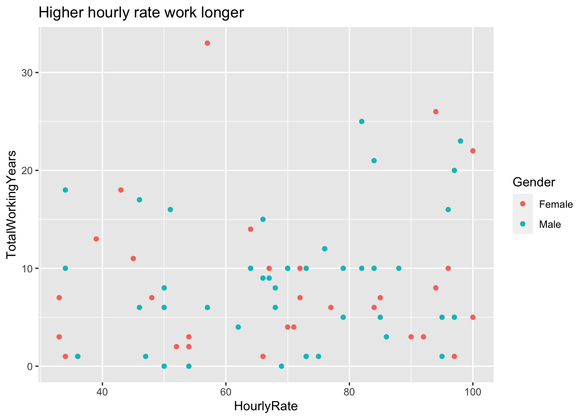
MaleFemaleM = Yes %>% filter (EducationField == "Marketing")
MaleFemaleM %>% ggplot(aes(x = Gender, color = EducationField)) + geom_bar() + ggtitle("Marketing and Gender")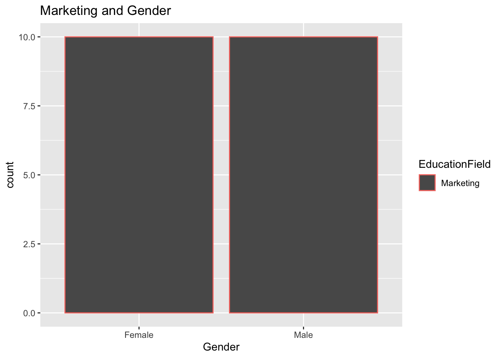
MaleFemaleL = Yes %>% filter (EducationField == "Life Sciences")
MaleFemaleL %>% ggplot(aes(x = Gender, color = EducationField)) + geom_bar() + ggtitle("Life Sciences and Gender")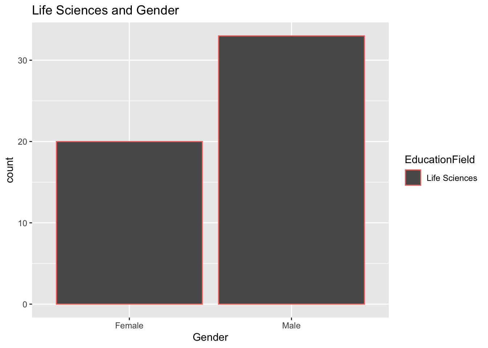
# k = 3
classifications = knn(train[,c(1,2)],test[,c(1,2)],train$EducationField, prob = TRUE, k = 3)
table(classifications,test$EducationField)##
## classifications Life Sciences Marketing
## Life Sciences 12 4
## Marketing 2 0confusionMatrix(table(classifications,test$EducationField))## Confusion Matrix and Statistics
##
##
## classifications Life Sciences Marketing
## Life Sciences 12 4
## Marketing 2 0
##
## Accuracy : 0.6667
## 95% CI : (0.4099, 0.8666)
## No Information Rate : 0.7778
## P-Value [Acc > NIR] : 0.9164
##
## Kappa : -0.1739
##
## Mcnemar's Test P-Value : 0.6831
##
## Sensitivity : 0.8571
## Specificity : 0.0000
## Pos Pred Value : 0.7500
## Neg Pred Value : 0.0000
## Prevalence : 0.7778
## Detection Rate : 0.6667
## Detection Prevalence : 0.8889
## Balanced Accuracy : 0.4286
##
## 'Positive' Class : Life Sciences
## #Prediction
Model1_fit = lm(HourlyRate ~ JobSatisfaction+MonthlyIncome+MonthlyRate, data = train)
summary(Model1_fit)##
## Call:
## lm(formula = HourlyRate ~ JobSatisfaction + MonthlyIncome + MonthlyRate,
## data = train)
##
## Residuals:
## Min 1Q Median 3Q Max
## -33.420 -13.531 -0.614 12.817 35.159
##
## Coefficients:
## Estimate Std. Error t value Pr(>|t|)
## (Intercept) 6.948e+01 7.963e+00 8.725 1.09e-11 ***
## JobSatisfaction -2.617e+00 2.633e+00 -0.994 0.325
## MonthlyIncome 1.129e-03 7.119e-04 1.586 0.119
## MonthlyRate -8.982e-06 4.035e-04 -0.022 0.982
## ---
## Signif. codes: 0 '***' 0.001 '**' 0.01 '*' 0.05 '.' 0.1 ' ' 1
##
## Residual standard error: 19.45 on 51 degrees of freedom
## Multiple R-squared: 0.06176, Adjusted R-squared: 0.006571
## F-statistic: 1.119 on 3 and 51 DF, p-value: 0.3501Model1_Preds = predict(Model1_fit, newdata = test)
as.data.frame(Model1_Preds)## Model1_Preds
## 1 75.98240
## 4 71.74060
## 5 66.29327
## 6 60.20214
## 9 68.16919
## 11 75.04463
## 15 69.02958
## 17 66.71251
## 23 62.04985
## 24 65.59483
## 26 66.80199
## 28 66.20254
## 47 69.80843
## 51 69.72508
## 54 69.05854
## 63 85.47703
## 64 69.47305
## 65 67.59543MSPE = mean((test$HourlyRate - Model1_Preds)^2)
sqrt(MSPE)## [1] 21.07824test %>% ggplot(aes(x = DistanceFromHome, y = HourlyRate)) + geom_point() + geom_smooth(method = "lm") + geom_line(data = test, aes( x = DistanceFromHome, y = Model1_Preds, col = "red")) ## `geom_smooth()` using formula 'y ~ x'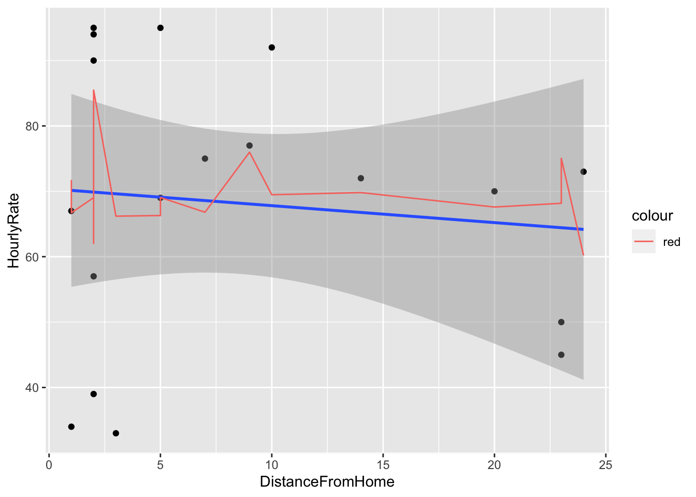
plot(x=Model1_Preds, y=test$HourlyRate,
xlab='Predicted Values',
ylab='Actual Values',
main='Predicted vs. Actual Values')
#add diagonal line for estimated regression line
abline(a=0, b=1)
#KNN 2 -------------------------------------------------------
set.seed(6)
splitPerc = .75
Male = Yes %>% filter (EducationField == "Life Sciences") %>% filter ( Gender == "Male")
summary(Male)## ID Age Attrition BusinessTravel
## Min. : 29.0 Min. :18.0 Length:33 Length:33
## 1st Qu.:233.0 1st Qu.:29.0 Class :character Class :character
## Median :429.0 Median :34.0 Mode :character Mode :character
## Mean :391.9 Mean :35.7
## 3rd Qu.:568.0 3rd Qu.:41.0
## Max. :841.0 Max. :56.0
## DailyRate Department DistanceFromHome Education
## Min. : 103.0 Length:33 Min. : 1.000 Min. :1.000
## 1st Qu.: 391.0 Class :character 1st Qu.: 2.000 1st Qu.:2.000
## Median : 626.0 Mode :character Median : 6.000 Median :3.000
## Mean : 730.4 Mean : 9.879 Mean :2.788
## 3rd Qu.:1089.0 3rd Qu.:23.000 3rd Qu.:3.000
## Max. :1475.0 Max. :29.000 Max. :4.000
## EducationField EmployeeCount EmployeeNumber EnvironmentSatisfaction
## Length:33 Min. :1 Min. : 19 Min. :1.00
## Class :character 1st Qu.:1 1st Qu.: 364 1st Qu.:1.00
## Mode :character Median :1 Median :1127 Median :2.00
## Mean :1 Mean :1032 Mean :2.03
## 3rd Qu.:1 3rd Qu.:1649 3rd Qu.:3.00
## Max. :1 Max. :1968 Max. :4.00
## Gender HourlyRate JobInvolvement JobLevel
## Length:33 Min. :34.00 Min. :1.000 Min. :1.000
## Class :character 1st Qu.:57.00 1st Qu.:2.000 1st Qu.:1.000
## Mode :character Median :73.00 Median :2.000 Median :1.000
## Mean :70.09 Mean :2.303 Mean :1.788
## 3rd Qu.:82.00 3rd Qu.:3.000 3rd Qu.:2.000
## Max. :98.00 Max. :3.000 Max. :4.000
## JobRole JobSatisfaction MaritalStatus MonthlyIncome
## Length:33 Min. :1.000 Length:33 Min. : 1102
## Class :character 1st Qu.:1.000 Class :character 1st Qu.: 2439
## Mode :character Median :3.000 Mode :character Median : 4284
## Mean :2.515 Mean : 5256
## 3rd Qu.:3.000 3rd Qu.: 6735
## Max. :4.000 Max. :12936
## MonthlyRate NumCompaniesWorked Over18 OverTime
## Min. : 3164 Min. :0.000 Length:33 Length:33
## 1st Qu.: 9571 1st Qu.:1.000 Class :character Class :character
## Median :14753 Median :3.000 Mode :character Mode :character
## Mean :14585 Mean :3.455
## 3rd Qu.:20739 3rd Qu.:6.000
## Max. :26092 Max. :9.000
## PercentSalaryHike PerformanceRating RelationshipSatisfaction StandardHours
## Min. :11.00 Min. :3.000 Min. :1.000 Min. :80
## 1st Qu.:12.00 1st Qu.:3.000 1st Qu.:1.000 1st Qu.:80
## Median :14.00 Median :3.000 Median :2.000 Median :80
## Mean :15.27 Mean :3.182 Mean :2.485 Mean :80
## 3rd Qu.:18.00 3rd Qu.:3.000 3rd Qu.:4.000 3rd Qu.:80
## Max. :24.00 Max. :4.000 Max. :4.000 Max. :80
## StockOptionLevel TotalWorkingYears TrainingTimesLastYear WorkLifeBalance
## Min. :0.0000 Min. : 0.000 Min. :1.000 Min. :1.000
## 1st Qu.:0.0000 1st Qu.: 5.000 1st Qu.:2.000 1st Qu.:2.000
## Median :0.0000 Median :10.000 Median :2.000 Median :3.000
## Mean :0.3636 Mean : 9.576 Mean :2.758 Mean :2.485
## 3rd Qu.:0.0000 3rd Qu.:12.000 3rd Qu.:3.000 3rd Qu.:3.000
## Max. :3.0000 Max. :25.000 Max. :6.000 Max. :4.000
## YearsAtCompany YearsInCurrentRole YearsSinceLastPromotion
## Min. : 0.000 Min. :0.000 Min. : 0.00
## 1st Qu.: 1.000 1st Qu.:0.000 1st Qu.: 0.00
## Median : 4.000 Median :2.000 Median : 1.00
## Mean : 5.909 Mean :2.879 Mean : 2.97
## 3rd Qu.:10.000 3rd Qu.:7.000 3rd Qu.: 6.00
## Max. :23.000 Max. :8.000 Max. :14.00
## YearsWithCurrManager
## Min. : 0.000
## 1st Qu.: 0.000
## Median : 2.000
## Mean : 3.273
## 3rd Qu.: 7.000
## Max. :10.000AttritionBoth = Employee %>% filter (EducationField == "Life Sciences") %>% filter ( Gender == "Male")
summary(Male)## ID Age Attrition BusinessTravel
## Min. : 29.0 Min. :18.0 Length:33 Length:33
## 1st Qu.:233.0 1st Qu.:29.0 Class :character Class :character
## Median :429.0 Median :34.0 Mode :character Mode :character
## Mean :391.9 Mean :35.7
## 3rd Qu.:568.0 3rd Qu.:41.0
## Max. :841.0 Max. :56.0
## DailyRate Department DistanceFromHome Education
## Min. : 103.0 Length:33 Min. : 1.000 Min. :1.000
## 1st Qu.: 391.0 Class :character 1st Qu.: 2.000 1st Qu.:2.000
## Median : 626.0 Mode :character Median : 6.000 Median :3.000
## Mean : 730.4 Mean : 9.879 Mean :2.788
## 3rd Qu.:1089.0 3rd Qu.:23.000 3rd Qu.:3.000
## Max. :1475.0 Max. :29.000 Max. :4.000
## EducationField EmployeeCount EmployeeNumber EnvironmentSatisfaction
## Length:33 Min. :1 Min. : 19 Min. :1.00
## Class :character 1st Qu.:1 1st Qu.: 364 1st Qu.:1.00
## Mode :character Median :1 Median :1127 Median :2.00
## Mean :1 Mean :1032 Mean :2.03
## 3rd Qu.:1 3rd Qu.:1649 3rd Qu.:3.00
## Max. :1 Max. :1968 Max. :4.00
## Gender HourlyRate JobInvolvement JobLevel
## Length:33 Min. :34.00 Min. :1.000 Min. :1.000
## Class :character 1st Qu.:57.00 1st Qu.:2.000 1st Qu.:1.000
## Mode :character Median :73.00 Median :2.000 Median :1.000
## Mean :70.09 Mean :2.303 Mean :1.788
## 3rd Qu.:82.00 3rd Qu.:3.000 3rd Qu.:2.000
## Max. :98.00 Max. :3.000 Max. :4.000
## JobRole JobSatisfaction MaritalStatus MonthlyIncome
## Length:33 Min. :1.000 Length:33 Min. : 1102
## Class :character 1st Qu.:1.000 Class :character 1st Qu.: 2439
## Mode :character Median :3.000 Mode :character Median : 4284
## Mean :2.515 Mean : 5256
## 3rd Qu.:3.000 3rd Qu.: 6735
## Max. :4.000 Max. :12936
## MonthlyRate NumCompaniesWorked Over18 OverTime
## Min. : 3164 Min. :0.000 Length:33 Length:33
## 1st Qu.: 9571 1st Qu.:1.000 Class :character Class :character
## Median :14753 Median :3.000 Mode :character Mode :character
## Mean :14585 Mean :3.455
## 3rd Qu.:20739 3rd Qu.:6.000
## Max. :26092 Max. :9.000
## PercentSalaryHike PerformanceRating RelationshipSatisfaction StandardHours
## Min. :11.00 Min. :3.000 Min. :1.000 Min. :80
## 1st Qu.:12.00 1st Qu.:3.000 1st Qu.:1.000 1st Qu.:80
## Median :14.00 Median :3.000 Median :2.000 Median :80
## Mean :15.27 Mean :3.182 Mean :2.485 Mean :80
## 3rd Qu.:18.00 3rd Qu.:3.000 3rd Qu.:4.000 3rd Qu.:80
## Max. :24.00 Max. :4.000 Max. :4.000 Max. :80
## StockOptionLevel TotalWorkingYears TrainingTimesLastYear WorkLifeBalance
## Min. :0.0000 Min. : 0.000 Min. :1.000 Min. :1.000
## 1st Qu.:0.0000 1st Qu.: 5.000 1st Qu.:2.000 1st Qu.:2.000
## Median :0.0000 Median :10.000 Median :2.000 Median :3.000
## Mean :0.3636 Mean : 9.576 Mean :2.758 Mean :2.485
## 3rd Qu.:0.0000 3rd Qu.:12.000 3rd Qu.:3.000 3rd Qu.:3.000
## Max. :3.0000 Max. :25.000 Max. :6.000 Max. :4.000
## YearsAtCompany YearsInCurrentRole YearsSinceLastPromotion
## Min. : 0.000 Min. :0.000 Min. : 0.00
## 1st Qu.: 1.000 1st Qu.:0.000 1st Qu.: 0.00
## Median : 4.000 Median :2.000 Median : 1.00
## Mean : 5.909 Mean :2.879 Mean : 2.97
## 3rd Qu.:10.000 3rd Qu.:7.000 3rd Qu.: 6.00
## Max. :23.000 Max. :8.000 Max. :14.00
## YearsWithCurrManager
## Min. : 0.000
## 1st Qu.: 0.000
## Median : 2.000
## Mean : 3.273
## 3rd Qu.: 7.000
## Max. :10.000trainIndices2 = sample(1:dim(AttritionBoth)[1],round(splitPerc * dim(AttritionBoth)[1]))
train2 = AttritionBoth[trainIndices2,]
test2 = AttritionBoth[-trainIndices2,]
AttritionBoth %>% ggplot(aes(x = HourlyRate, TotalWorkingYears, color = Attrition)) + geom_point() + ggtitle("Higher hourly rate work longer")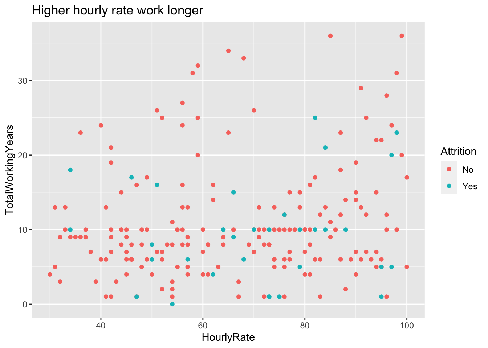
# k = 3
classifications = knn(train2[,c(1,2)],test2[,c(1,2)],train2$Attrition, prob = TRUE, k = 3)
table(classifications,test2$Attrition)##
## classifications No Yes
## No 45 6
## Yes 3 0confusionMatrix(table(classifications,test2$Attrition))## Confusion Matrix and Statistics
##
##
## classifications No Yes
## No 45 6
## Yes 3 0
##
## Accuracy : 0.8333
## 95% CI : (0.7071, 0.9208)
## No Information Rate : 0.8889
## P-Value [Acc > NIR] : 0.9282
##
## Kappa : -0.08
##
## Mcnemar's Test P-Value : 0.5050
##
## Sensitivity : 0.9375
## Specificity : 0.0000
## Pos Pred Value : 0.8824
## Neg Pred Value : 0.0000
## Prevalence : 0.8889
## Detection Rate : 0.8333
## Detection Prevalence : 0.9444
## Balanced Accuracy : 0.4688
##
## 'Positive' Class : No
## #Prediction
Model1_fit = lm(HourlyRate ~ JobSatisfaction+MonthlyIncome+MonthlyRate, data = train)
summary(Model1_fit)##
## Call:
## lm(formula = HourlyRate ~ JobSatisfaction + MonthlyIncome + MonthlyRate,
## data = train)
##
## Residuals:
## Min 1Q Median 3Q Max
## -33.420 -13.531 -0.614 12.817 35.159
##
## Coefficients:
## Estimate Std. Error t value Pr(>|t|)
## (Intercept) 6.948e+01 7.963e+00 8.725 1.09e-11 ***
## JobSatisfaction -2.617e+00 2.633e+00 -0.994 0.325
## MonthlyIncome 1.129e-03 7.119e-04 1.586 0.119
## MonthlyRate -8.982e-06 4.035e-04 -0.022 0.982
## ---
## Signif. codes: 0 '***' 0.001 '**' 0.01 '*' 0.05 '.' 0.1 ' ' 1
##
## Residual standard error: 19.45 on 51 degrees of freedom
## Multiple R-squared: 0.06176, Adjusted R-squared: 0.006571
## F-statistic: 1.119 on 3 and 51 DF, p-value: 0.3501Model1_Preds = predict(Model1_fit, newdata = test)
as.data.frame(Model1_Preds)## Model1_Preds
## 1 75.98240
## 4 71.74060
## 5 66.29327
## 6 60.20214
## 9 68.16919
## 11 75.04463
## 15 69.02958
## 17 66.71251
## 23 62.04985
## 24 65.59483
## 26 66.80199
## 28 66.20254
## 47 69.80843
## 51 69.72508
## 54 69.05854
## 63 85.47703
## 64 69.47305
## 65 67.59543MSPE = mean((test$HourlyRate - Model1_Preds)^2)
sqrt(MSPE)## [1] 21.07824test %>% ggplot(aes(x = Age, y = HourlyRate)) + geom_point() + geom_smooth(method = "lm") + geom_line(data = test, aes( x = Age, y = Model1_Preds, col = "red")) + ggtitle("Hourly Rate Predictions")## `geom_smooth()` using formula 'y ~ x'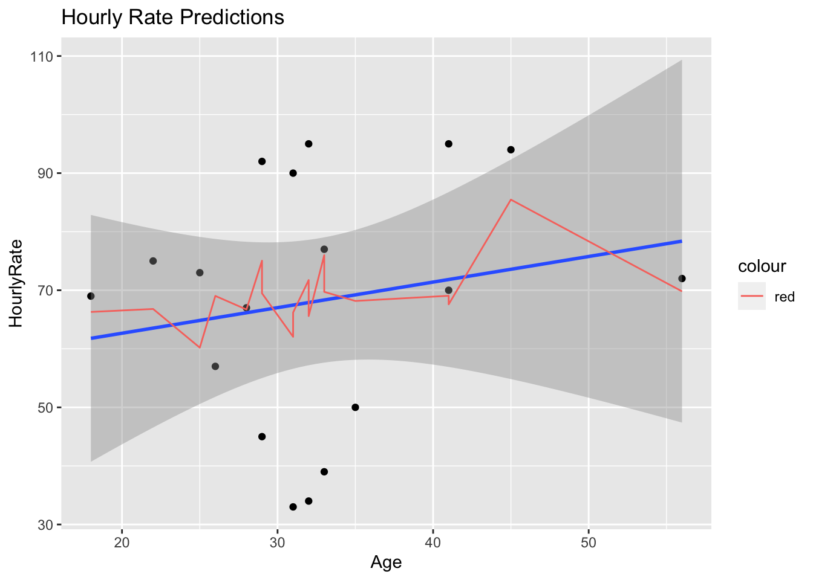
plot(x=Model1_Preds, y=test$HourlyRate,
xlab='Predicted Values',
ylab='Actual Values',
main='Predicted vs. Actual Values')
#add diagonal line for estimated regression line
abline(a=0, b=1)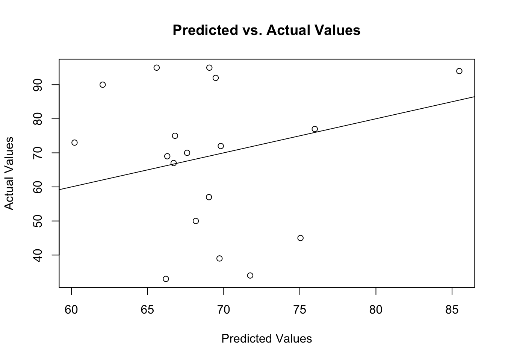